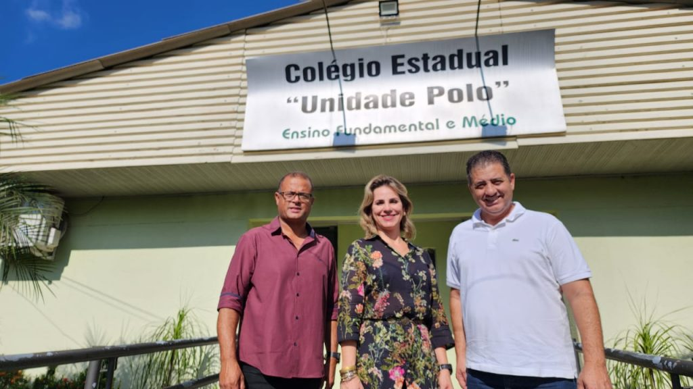

Trabalho de Desenvolvimento
Isabela - 2026

Estudo na Unidade Polo em Arapongas, que oferece ensino médio profissionalizante com foco em tecnologia e inovação. É um ambiente que valoriza o aprendizado prático e teórico, preparando os alunos para os desafios do mercado de trabalho.
Atualmente curso o Técnico em Projeto de Sistemas, onde desenvolvo competências em programação, análise de sistemas e criação de soluções digitais. Essa formação me proporciona uma base sólida para atuar em diferentes áreas da tecnologia, sempre unindo criatividade e lógica para resolver problemas reais.
Meu nome é Isabela Susuki Honorio, tenho 17 anos e estudo no Polo em um ensino médio profissionalizante de Projeto de Sistemas. Sou apaixonada por tecnologia e inovação, com interesse especial em desenvolvimento de software, análise de sistemas e criação de soluções digitais. Durante minha formação, venho adquirindo experiência prática em linguagens de programação, desenvolvimento mobile e projetos de análise, sempre buscando unir criatividade e lógica para resolver problemas reais.
Além dos estudos, procuro constantemente evoluir minhas habilidades técnicas e interpessoais, participando de projetos que estimulam o trabalho em equipe, a comunicação e a organização. Meu objetivo é construir uma carreira sólida na área de tecnologia, contribuindo para soluções que impactem positivamente pessoas e empresas.
Email: h.isabela@escola.pr.gov.br
GitHub: https://github.com/isasusuki?tab=repositories
LinkedIn: linkedin.com/in/isabela-susuki
Instagram: @isabe.lla709
Telefone: +55 (43) 99646-2644